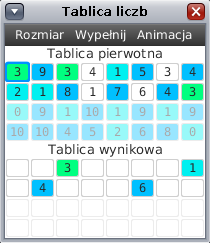

W poprzednich częściach funkcja "podziel" działała na dodatkowych tablicach. W tej części spróbujemy tego uniknąć.
 W oknie z tablicami liczb dalej są dwie tablice. Jednak górna tablica służy tylko do wprowadzania liczb i prezentuje stan tablicy przed uruchomieniem programu. Natomiast dolna tablica jest po starcie programu wypełniona liczbami z górnej tablicy. Funkcja „podziel” powinna porównywać i zamieniać elementy tylko w tej dolnej tablicy. W tej części do twojej dyspozycji są dwie funkcje specjalne: „zamien(idx1, idx2)” oraz „porownaj(idx1, idx2)”. Podobnie jak w poprzedniej części porównania elementów są ograniczone. Więcej informacji na temat funkcji specjalnych można uzyskać czytając treść zakładki "funkcje specjalne".